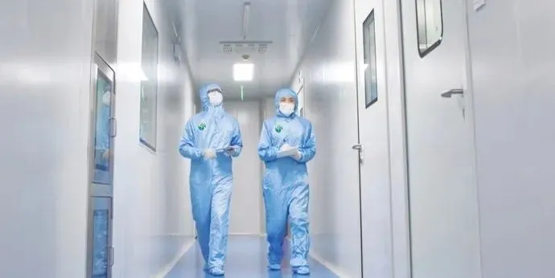
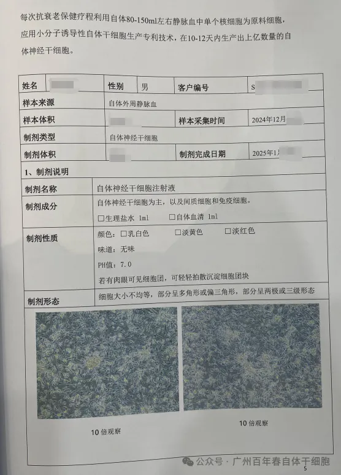
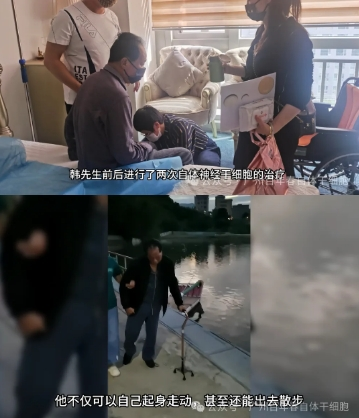

年后肝"负重"？百年春护肝美颜能量抗衰老针——给肝"松绑"，让脸发光！
2026-03-01

About Us
关于百年春

帕金森病，全球第二大神经系统疾病。
对帕金森病病人来说，在症状期，帕金森病患者通常采用药物治疗，药物治疗的效果因人而异，且随着病情的进展，药效可能会逐渐下降，并出现增药后副作用。
目前医学界主要还停留在对症治疗层面，但针对病理机制层面的对因治疗，近年来也取得了一些研究进展。
帕金森还是“无法医治”的疾病吗？
帕金森病的发病机理主要是黑质多巴胺能神经元变性死亡，导致神经功能出现障碍。这种神经元损伤可能导致运动迟缓、肌肉僵硬和震颤等症状。此外，帕金森病的发病还可能与家族遗传、环境因素（如长期接触有机溶剂、重金属等环境毒素）、神经系统老化以及头部外伤等因素有关。
某神经外科主任吴教授说：“预计至2030年，我国帕金森病的人数将高达500万。”“目前现有的传统药物或手术都不能再生多巴胺能神经元或解决神经元退行性病变和死亡的问题，尚不能改变帕金森病的疾病发展进程。”
但随着再生医学界的科学家们不断的深入研究，自体干细胞疗法在治疗神经系统疾病，特别是帕金森病等退行性疾病方面，确实展现出了巨大的潜力。
“干细胞即起源细胞，具有多向分化潜能和自我更新的特性。”百年春通过抽取客户80-150ml的血液，化学小分子诱导成自体神经干细胞、自体造血干细胞或自体间充质干细胞来综合为客户修复神经系统疾病。

中国首个CIPS技术
利用自体造血干细胞和自体神经干细胞让帕金森患者恢复良好
百年春CIPS化学小分子诱导技术，1998年在德国研发成功，2002年被国务院邀请受邀回国，并在国内开创首家干细胞移植专科医院，也是目前中国真正意义上两家拿到干细胞牌照的医院之一。
于2017年1月，百年春通过抽取客户100ml血液，逆向生成出自体造血干细胞和自体神经干细胞，通过静脉回输、蛛网膜下腔回输的方式，进行了自体干细胞移植。
治疗后，没有出现手术及围术期的并发症或其他不良安全事件，并且平稳度过观察期后进入了12个月的随访期，直至2025年，也未有不良反馈。

并且在百年春随后一个月的访问中，客户表示语言能力有明显提升，精力体力也很充足，从以前无法自理，肢体颤抖、僵硬，无法离开家人，现如今已经客户起身走动。
中国首个ipsc治疗帕金森的临床备案项目
2024年1月，由国家卫生健康委和国家药品监督管理局批准，是首个iPSC衍生细胞治疗帕金森病国家级备案临床研究项目。
伦理与审批：该项目经过了医院学术和伦理的严格审查，并获得了国家卫生健康委员会和国家药品监督管理局的批准。
受试者情况：多年帕金森病患者，基本丧失运动能力。通过脑立体移植的回输方式，让细胞可送达其脑内特定部位——壳核。
随访结果：经过一年的随访，患者运动能力及生活质量都有显著改善。肢体行为动作改善；语言表达能力改善；像日常生活自理活动及家务能较好完成。
该团队表示：“本产品为患者自体来源，无免疫原性，不会产生免疫排斥反应。所以在研究过程中，不需要使用免疫抑制剂去治疗，更不需要HLA人类白细胞抗原分型。”
结语